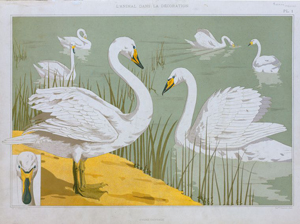
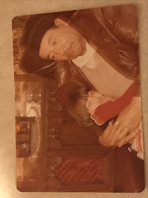
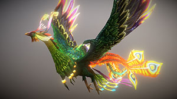
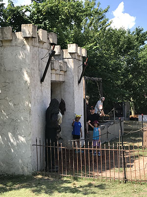
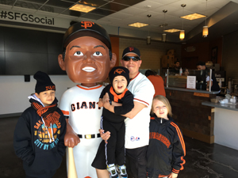
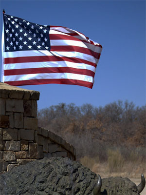
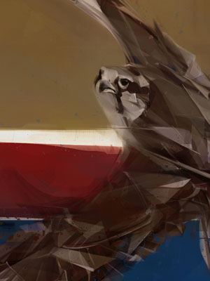

Welcome to my page showing a few of my favorite projects modifying images.
Working with Photoshop is something I always wanted to learn, I have worked with it a bit but
limited to resize an image, rotate and croping and that was the extent. You will be walking through my lab projects completed during my semester
taking this web design class using Photoshop.
The first section you will find the final version of the images so you can get a preview of what is to come. You can either select one of the
images or just continue to scroll down to find out more. In most sections you will find out a little bit about what I used/chose to do for the project.
These are the projects I either enjoyed working with or really liked the final results.
So let's jump right in shall we....
Photo1- Cygne Sauvage
The image used came from the New York Public Library - Digital Collections
named "Cygne Sauvage" (Wild Swan).
The focus for this project was "Removing unwanted parts from image".
What I learned? With this lab I learned to use the clone tool, I chose to remove the stamp picture located on the bottom right.
Once the portion of the image was removed I used the Clone Stamping tool and Spot Healing tool. I added the swan's shadow on the sand and
completed the border around the image.
In my opinion I thought this changes came out pretty good and was very happy how the shadow came out.
 Original Picture Final Version
Photo2 - Picture of Picture
How many times have you seen a photo at a family/friends place and you want a copy of it. In this case, the image was of
my Grandpa and Me. A quick copy is just to take a picture using your camera/phone and that is what I did. But it is just not the same
in this case, I wanted to see how I can make it look like if was not a picture of a picture.
The focus for this project was "Straightening an image".
What I learned? With this lab I learned how to crop the image and rotate it to be landscape. After the rotation I continue to tinker
with the crop to get rid of the edges that still showed a visible sign that it was a picture of a picture. This picture was also resized to be smaller.
Although, it looks good I may want to play around a little more on trying to make the image a bit clearer but all in all I was happy with the results.
 Original Picture Final Version
Photo3 - Renaissance Fair Poster
So I really liked working on this project as I was about to add an effect background (clouds) and color could be adjusted. Added the Phoenix on it to keep with
Medieval theme. And of course, I had Scarborough Fair in mind when I was working on this image. I just found out that they were postponing the opening of the Fair
due to COVID-19. In reality, if they are open in the summer month I will most likely not go... it is too hot. One year we went on the last weekend they were open and
we did not last long the heat was just too much. Okay I think I got off topic.
The image of the Phoenix was obtained from CreativeCommons.org website and the castle image was my own image.
The focus for this project was "Create your own Poster".
What I learned? Again, I really enjoyed working on this project I learned to use a Filter to add the cloud s to the background.
With the Phoenix image I selected the mask to cut the image and paste it on to the poster background. I was also able to add text and play with a warp to change the
layout of how the text lays. Another thing I learned was to adjust the birds head to move back a bit so there was room for the words to come out.
I added my own custom shape for the shield (not that could have come out a bit better but not bad for drawing it free hand) then added a glow around the shield.
That the best thing of all I think was adding the castle image at the bottom. I had to play around with this a bit to get the correct size then added it to the image
using Rectangle Marquee tool and change Luminosity/Opacity of the image.
 Original Picture  Original Picture Final Version
Photo4 - We Are GIANT Magazine Cover
Okay, so this past year we took a family trip to San Francisco to go see the Giants play at their home stadium.
So this was a very happy moment for my husband to be at the game with his kids.
The focus for this project was to create a "Magazine Cover". My theme: Magazine: "We ARE GIANT" a magazine all about living in San Francisco and Bay Area. Stories about living by the bay and
family interviews about their experience in San Francisco, likes and dislikes and how it is watching Giants baseball game, etc...
What I learned? For this project I performed several changes a few included, croping the image, resize the image,
adding a new Text Layer adding "We Are Giant". The text layer also included several effects added such ass drop shadow, stroke and gradient layer.
Magnetic lasso tool was used to include the main focus of the image so the background could be darkened and keep focus on family and bobble head.
So as part of the project we had to keep a list of what was performed. Let's just say I was very happy with that part as I had to work this project twice.
The first time, I had the wrong size requested by the project instructions. And although it took me a long time to get all the colors/background just to my liking
The second time was a lot faster having my step by step notes to perform the changes.
This will definitly be an image that will get framed somewhere in our house.
 Original Picture Final Version
Photo5 - US Flag with Eagle Silhoutte
Okay, so I think this is one that I am most proud of. I tried using my own pictures initially but I just did not like the way the pictures came out so I started fresh.
I started browsing through CreativeCommons.org website. So as I browsed I was inspired by seeing images of U.S. Flag and figured
adding an image of an eagle would look nice. And that is what I ended up doing for this one.
The focus for this project was "Layers and Blends".
What I learned? Working with layers and blends it is helpful use images with contrasting colors (at least that is what worked best for me).
The image sizes were changed to be the same size. I learned to use Blending Options under Layers and played around with the different colors until I got an image I liked.
One last adjustment to brightness and it was done.
I chose to add this image last as this one was my favorite of all the labs.
 Original Picture  Original Picture Final Version